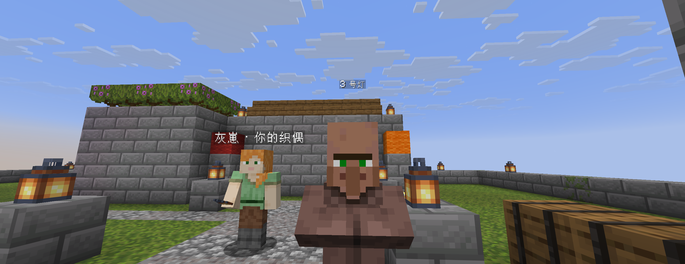
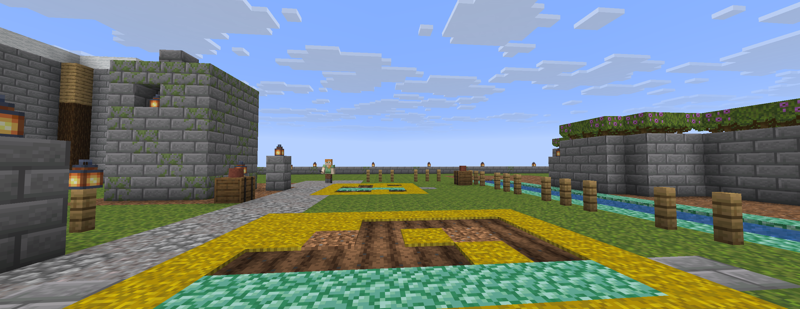
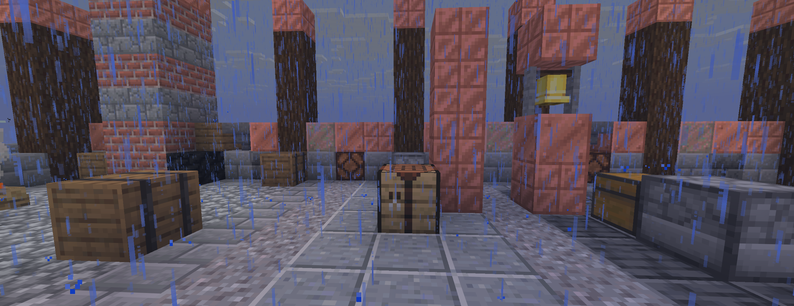
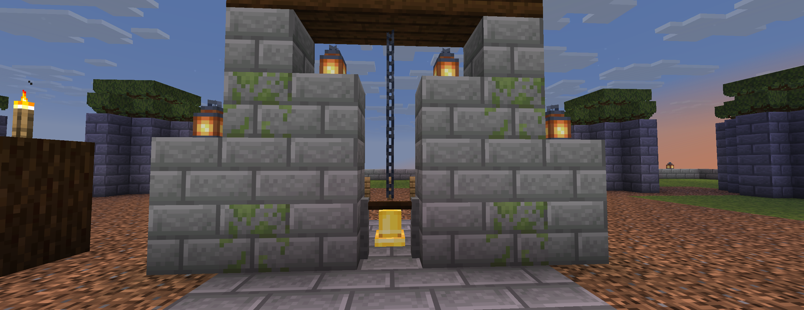
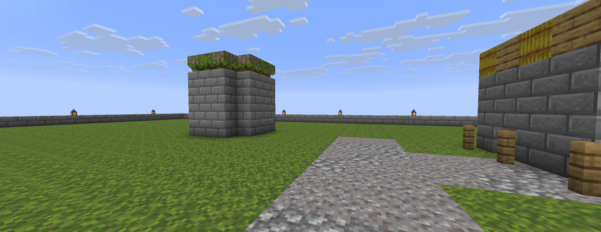
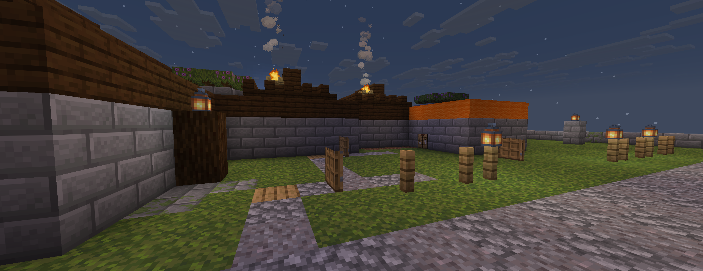
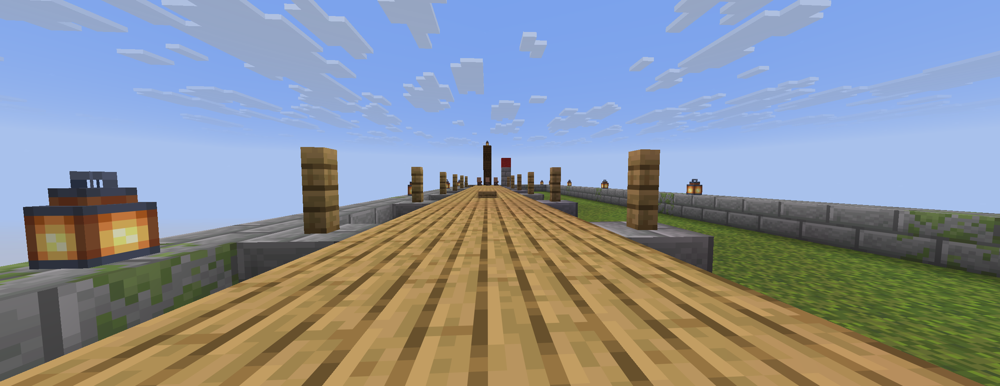
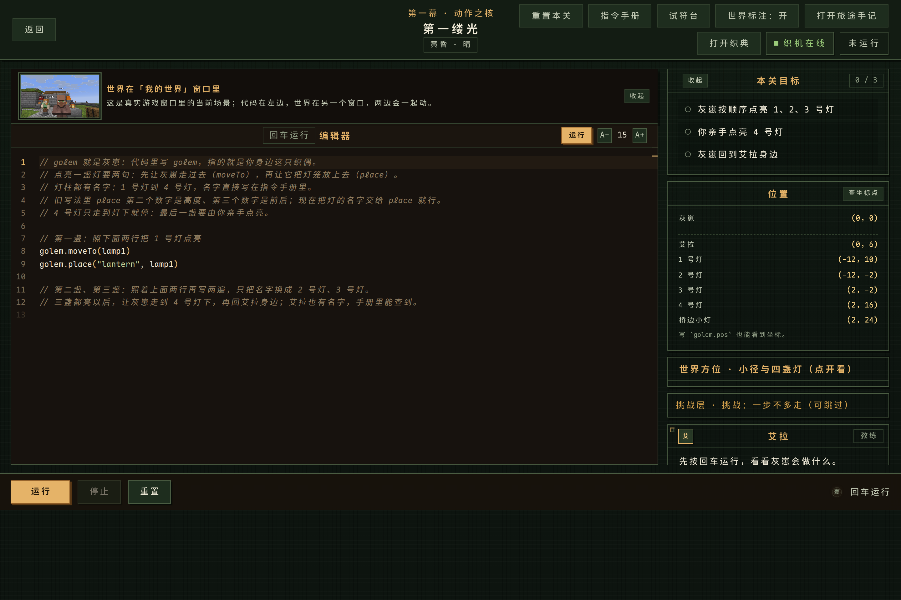

01这是什么
不是刷题外壳，也不是积木模拟：学生写的是真实 TypeScript，改的是真实 Minecraft 世界，学的是真实语言设计思想。
让世界动起来
顺序、变量、分支、循环。黄昏点灯、鸡舍数蛋、夜巡守村、雨前种田——先有「我能让世界动」的掌控感。
让世界有秩序
函数、模块、记录、变体、闭包、高阶函数、管道、接口组合。同一套规则，从一栋房子复用到整座村庄。
让世界重新运转
异步、错误、并发与协作。入夜前完成酿造；两只织偶用消息在峡谷两岸合龙一座桥。
02一张地图，十个场所
所有关卡收缩在同一片「灰岩村 + 周边 300 格」里：村庄中心、西侧农田、东侧工坊、北侧峡谷、村下大织机遗迹。前一关点亮的灯、修好的房子，在下一关仍然在。







03课程梯度：一关一个抽象
顺序 → 变量 → 分支 → 循环 → 函数 → 记录/变体 → 闭包/高阶/管道 → 接口/组合 → 异步 → 并发。每关都有一个「先让你痛，再给你工具」的动机演示。
| # | 关卡 | 新抽象 | MC 场景 | 玩家亲手做的最后一件事 | 强度 |
|---|---|---|---|---|---|
| 01 | 第一缕光 | 顺序 / 调用 | 黄昏小径点灯 | 点亮第 4 盏灯 | P0 |
| 02 | 会数数的织偶 | 变量 / 绑定 | 鸡舍收蛋 | 引鸡回窝 | P0 |
| 03 | 岔路与钟声 | 布尔 / 分支 | 三夜守村 | 天亮敲钟 | P0 |
| 04 | 麦田的咒语 | 循环 | 雨前种田 | 立稻草人 | P0 |
| 05 | 一百座房子 | 函数 / 模块 | 新地块造屋 | 写门牌 | P0 |
| 06 | 商队的账本 | 记录 / 变体 | 旅商分拣 | 完成交易 | P1 |
| 07 | 信风与织线 | 闭包 / 高阶 / 管道 | 悦灵分拣 | 打开笼子 | P1 |
| 08 | 同一种心跳 | 接口 / 组合 | 织机工坊 | 拉总开关 | P1 |
| 09 | 入夜之前 | 异步 / 并发 | 黄昏营地 | 泼药水 + 敲暮钟 | 可玩 |
| 10 | 双织者 | 并发 / 消息 | 峡谷合龙桥 | 放合龙石 | 可玩 |
04技术：一条逻辑接口，两条物理通道
Mineflayer 只是客户端，控不了别的实体；所以「织偶的动作」走 bot，「世界的逻辑与真值」走 Paper 插件。学生只看到 golem 与 world。

已经实测：Paper 26.1.2 + Java 25 + mineflayer 4.39.0；L01–L10 真实 Paper 无头端到端全绿（L01 21 项、L02–L09 各 13 项、L10 19 项；评分与 Mock 逐项一致）；L10 双织偶 + 合龙石玩家节拍真实通过。桌面 App 已内置 Node/Java/Paper/插件/世界/真实引擎与织偶，用户只需安装 Minecraft 26.1.2；L01–L10 场景已全部重拍为真实客户端 2560×1440 高清截图，并逐关通过起始点审计（evidence/playtest-fix/start-positions.md）。
05AI 工作流：证据比生成重要
4 天、几乎全 AI、人类只在 3 个检查点出现。每一道门禁都要求可复跑的证据，而不是「我觉得做完了」。
8 层质量门
静态 → 单元 → 契约 → property → 变异 → 真 MC 集成 → E2E → agentic QA（盲测、红队、spec 变异）。
2 个 agent 才叫评审
写代码与评审必须是不同上下文；测试目录 hash 冻结；评分真值放服务端；红队 12 条攻击。
3 个人类检查点
设计拍板 → 垂直切片试玩 → 终局彩排。人类总投入 ≤4 小时，其余由 AI 自证。
06证据（不是口号）
已经跑通的
· MC 双通道 7/7（bot 放置 → 插件真值 → 插件写方块/召唤 → bot 观测 → 双向聊天 → 命令）
· L01–L10 真实 Paper e2e 全 PASS；L10 双织偶真实 19 项、Studio 会话注入 11 项；单轮合龙 6.7–6.9s
· 真实玩家操作路径：L01–L10 每关 2–3 条 progress 由引擎真值驱动，17 个 player beat 全可由真人右键完成
· 3 bot 同服、actorType 区分真人/织偶、Mannequin 皮肤、ItemDisplay 动画
· L01–L10 内容：每关参考解 3 星、starter/作弊失败；235 项自动化测试、Studio e2e 6/6、UOS 4/4
· 试符台 REPL、织典 17 页、序章/旅途手记、纯中文门禁、Fresh Reader 盲读
正在建
· 挑战层目前是说明卡，尚未开放为可玩挑战会话
· 真人多背景盲测未执行，目前是 AI 自动化验收（真实 Paper e2e + Studio e2e + UOS）
· 10 关真实客户端截图已全部重拍（2560×1440，含 L10），逐关起始点审计通过；L10 出生朝向仍是草地夹道（构图问题，已记入边界）
· Fresh Reader Round 4 尚未清零（门禁仍为 tracked fail）
· L03/L05 出生点、L02 蛋糕与 L04 南瓜目标格已在 11-01 修复（见 evidence/playtest-fix/report.md §4）
07七分钟演示
黄昏的灰岩村：灯灭、织偶冻结。艾拉把一枚织机碎片交给你。
L01：写下 4 行字，织偶沿小径依次点灯，村民沿光回家；你亲手点亮最后一盏。
L03：一个程序跑三夜试炼——安静夜不敲钟、北门有僵尸才敲钟。第六夜组合情景也过。
L07：一行 pipe(filter(isOre), map(toIngot), giveTo("A"))，悦灵像信风一样把货物分进箱子。
L10：两只织偶用消息协调，桥从两岸合龙；你放下合龙石，散线退去，日出，村民过桥。
《织典》：同一组抽象在 C / Lisp / Haskell / Rust / Go 里的样子——「语法是皮，抽象是骨」。
收尾：这不是一个「编程游戏」，而是一门用世界讲清楚的语言课。
08诚实说明
我们知道它还不完美
- 这是 4 天课程项目的设计 + 可运行垂直切片（L01–L10 全部可玩并经真实 Paper 验收），不是发行版游戏；挑战层仍是说明卡。
- 桌面 App 已内置 Node/Java/Paper/插件/世界/真实引擎与织偶，用户只需安装 Minecraft 26.1.2；首次启动会把旧世界替换为干净世界（关卡进度/星级存于 Studio，不受影响）。
- 学习效果未做统计显著的实证：Fresh Reader 是模拟读者（非真人），只证明「读得懂」，不等于学习效果。
- Minecraft 资产不能随项目分发；公开版本需要替换自制美术资产。
- 「能跑通」不等于「好玩」：每个关卡都要过盲读与盲测，通不过就改设计，不怪玩家。